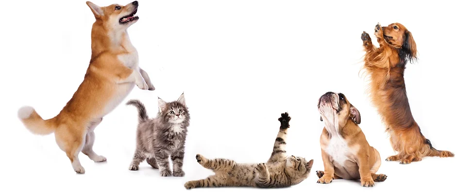

Заяви услуга
Заявени услуги

Налага се да отсъстваш, а няма кой да се грижи за домашните любимци? Искаш индивидуална грижа, съобразена с техния ритъм на живот?
Докато си далеч от дома, екипът на BuddyGuard ще се погрижи домашните любимци да получат нужното внимание, игри, грижа и любов в комфортната за тях среда - техния дом.
Нашата умна камера BuddyCam предоставя възможността да общуваш с животинчето директно през мобилно устройство, както и да наблюдаваш имота си по всяко време.